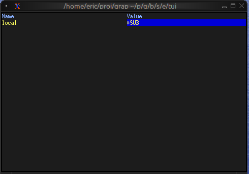
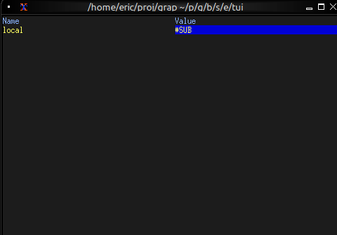

The Browser Widget
The browser widget provides a specialized interface for browsing and interacting with netidx hierarchies. It displays a table of one level's children, one column per published column when the children are rows of a table, with selection and cursor movement support.
Interface
use super::{Constraint, Flex, line, Size, Style, style, Tui};
use sys::net;
use tui::table::{cell, row, table};
type MoveCursor = [
`Left(i64),
`Right(i64),
`Up(i64),
`Down(i64)
];
/// A netidx browser over `path`: a table of its children, with one
/// column per published column when the children are rows of a table.
/// The listing refreshes when `path` changes and about once a second,
/// so rows published later appear on the next refresh.
/// `#size` is the area the browser is drawn in, which sizes its
/// viewport (pass the enclosing block's `#size` output); `#cursor`
/// moves the selection. `#selected_row` is set to the selected row's
/// full path, and `#selected_path` to the selected cell's; each is null
/// while the listing is empty, and neither is set while a new path's
/// listing is on its way.
val browser: fn(
?#selected_style: Style,
?#header_style: Style,
?#style: Style,
?#cursor: MoveCursor,
?#selected_row: &mut [string, null],
?#selected_path: &mut [string, null],
?#flex: Flex,
?#rate: duration,
#size: Size,
path: string
) -> Tui;
Parameters
- path - The netidx path whose children are listed. The listing refreshes when
pathchanges and about once a second, so rows published later appear on the next refresh - cursor - Programmatic cursor movement:
Left(n),Right(n),Up(n),Down(n) - selected_row (output) - Full path of the selected row (e.g.
/t/r1), null while the listing is empty - selected_path (output) - Full path of the selected cell: the row in a list, the row and column in a table; null while the listing is empty
- size (input) - The area the browser is drawn in, which sizes its viewport; pass the enclosing block's
#sizeoutput - rate - The most often a cell's subscription updates the display (default
duration:0.5s) - flex - How the columns share leftover width (default
`SpaceBetween) - style, header_style, selected_style - Styles for the table, its header row and the selected cell
Examples
Basic Usage
use tui::{Size, block::block, browser::browser};
let selected_path: [string, null] = never();
let size: Size = never();
block(
#border: &`None,
#size: &mut size,
&browser(
#size,
#selected_path: &mut selected_path,
// Start browsing from root
"/"
)
)

Basic Navigation
use tui::{
Size,
block::block,
browser::{MoveCursor, browser},
input_handler::{Event, input_handler, on_press}
};
let path = "/";
let selected_path: [string, null] = never();
let selected_row: [string, null] = never();
let cursor: MoveCursor = never();
let size: Size = never();
let handle_event = |e: Event| on_press(e, |k| select k.code {
e@ `Up => { cursor <- e ~ `Up(1); `Stop },
e@ `Down => { cursor <- e ~ `Down(1); `Stop },
e@ `Left => { cursor <- e ~ `Left(1); `Stop },
e@ `Right => { cursor <- e ~ `Right(1); `Stop },
e@ `Enter => { path <- (e ~ selected_row)$; `Stop },
_ => `Continue
});
input_handler(
#handle: &handle_event,
&block(
#border: &`None,
#size: &mut size,
&browser(
#size,
#cursor,
#selected_path: &mut selected_path,
#selected_row: &mut selected_row,
path
)
)
)

Commands
A : command line beside the browser: :w <value> writes the value to
the selected path, and an error from the command shows in the bottom
title.
use tui::{
Size, line, span, style,
block::block,
browser::{MoveCursor, browser},
input_handler::{Event, KeyCode, input_handler, on_press}
};
let path = "/";
let command_error = "";
let selected_path: [string, null] = never();
let selected_row: [string, null] = never();
let cursor: MoveCursor = never();
let command_mode = false;
let command = "";
let run_command = |c: string, path: string| {
catch(e) command_error <- "[(e.0).error]";
select str::sub(#start:0, #len:2, c)? {
"w " => {
let v = str::sub(#start:2, #len:str::char_len(c) - 2, c)?;
let v: Primitive = str::parse(v)?;
sys::net::write(path, v)?
},
_ => error("invalid command [c]")?
}
};
let title_style = style(#fg:`Indexed(202));
let title_bottom = select command_mode {
true => line(#style:title_style, ":[command]"),
false => {
let spans = [
span(select selected_path { null as _ => path, p => "[path] ([p])" }),
span(#style:style(#fg:`Red), " [command_error]")
];
line(#style:title_style, spans)
}
};
let handle_normal_mode_key = |e: KeyCode| -> [`Stop, `Continue] select e {
e@ `Left => { cursor <- e ~ `Left(1); `Stop },
e@ `Right => { cursor <- e ~ `Right(1); `Stop },
e@ `Down => { cursor <- e ~ `Down(1); `Stop },
e@ `Up => { cursor <- e ~ `Up(1); `Stop },
e@ `Enter => { path <- (e ~ selected_row)$; `Stop },
e@ `Backspace => select e ~ str::dirname(path) {
null as _ => `Stop,
s => {
path <- s;
`Stop
}
},
k@ `Char(":") => {
command <- k ~ "";
command_error <- k ~ "";
command_mode <- k ~ true;
`Stop
},
_ => `Continue
};
let handle_command_mode_key = |e: KeyCode| -> [`Stop, `Continue] select e {
`Char(c) => {
command <- c ~ "[command][c]";
`Stop
},
x@ `Enter => {
command_mode <- x ~ false;
run_command(x ~! command, (x ~! selected_path)$);
`Stop
},
e@ `Backspace if command != "" => {
let len = str::char_len(command) - 1;
command <- e ~ str::sub(#start:0, #len, command)$;
`Stop
},
k@ `Esc => {
command_mode <- k ~ false;
`Stop
},
_ => `Continue
};
let handle_event = |e: Event| on_press(e, |k| select k ~ command_mode {
true => handle_command_mode_key(k.code),
false => handle_normal_mode_key(k.code)
});
let size: Size = never();
let browser = browser(
#cursor,
#selected_row: &mut selected_row,
#selected_path: &mut selected_path,
#size,
path
);
let block = block(
#border:&`None,
#title_bottom:&title_bottom,
#style:&style(#bg:`Indexed(234)),
#size:&mut size,
&browser
);
input_handler(#handle: &handle_event, &block)